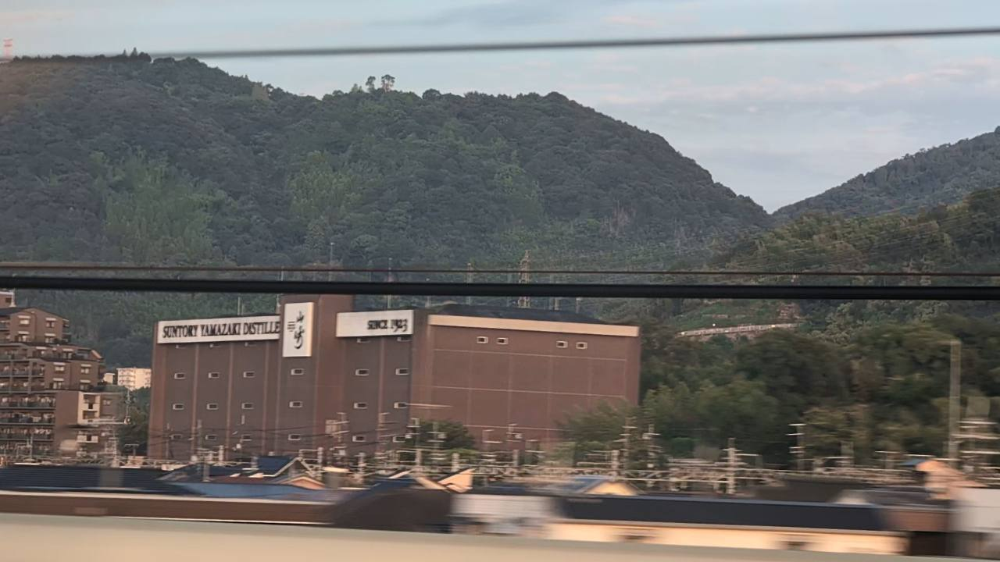

大阪府 島本町
名酒を育てる、山と川。
「山崎」が生まれる場所には、理由がある。
京都を出て、新大阪へ。旅の終わりが近づくこの区間に、ウイスキーの「山崎」が生まれる町があります。選ばれたのは、水と、山と川がつくる気候でした。
この町の話を読む約3〜4分で読む / 東海道新幹線沿線

知っている名前の、知らなかった場所
「山崎」は、ここの名前。
京都から新大阪へ向かうとき、もうすぐ着くからと荷物をまとめ始める。その途中で新幹線は、大阪府島本町を通ります。京都府との境にあるこの町に、山崎蒸溜所があります。
「山崎」というウイスキーの名前は知っていても、それがいつもの通り道にあるとは、思っていなかったかもしれません。蒸溜所が建つのは、天王山のふもと。1923年、サントリーの創業者・鳥井信治郎は、この土地で蒸溜所の建設を始めました。
「山崎」という銘柄名は、蒸溜所を建てた土地の名前から付けられました。その所在地は、島本町山崎です。
地名としての「山崎」は、京都府の大山崎町と大阪府の島本町山崎などにまたがる地域として使われてきました。府境をまたぐこの土地の、大阪側でウイスキーが造られています。
なぜ、ここだったのでしょう。名の知られた商品を、地図の上に置いてみると、土地が選ばれた理由が見えてきます。
図で、つながりをたどる
土地が、仕込みから熟成まで関わる。
- 01
地下の水
良質な地下水を、仕込みに使う。
- 02
山と三つの川
天王山と三川合流の周辺に、湿潤な気候。
- 03
樽で過ごす時間
土地の気候の中で、原酒が熟成していく。
仕込みの前に、土地を選ぶ
まず、水があった。
ウイスキーをつくるには、原料だけでなく、仕込みに使う水が欠かせません。山崎には良質な地下水があり、それが蒸溜所の建設地に選ばれた理由の一つでした。
近くの水無瀬神宮には、名水百選に選ばれた「離宮の水」が湧いています。サントリーは、この水と「山崎」の仕込み水は源流を同じくすると紹介しています。境内へ水を汲みに訪れる人と、蒸溜所で仕込みをする人。それぞれの営みの下に、同じ土地の水があります。
瓶の中の飲み物からたどると、工場の外へ、さらに目に見えない地下へと、話がつながっていくのです。
もう一つの条件
水を仕込み、季節に預ける。
良い水があるだけで、山崎に決まったわけではありません。もう一つ重視されたのが、熟成に向いた気候でした。
北には天王山。南には桂川・宇治川・木津川が集まる場所があり、その向こうには男山があります。山と川に挟まれたこの一帯は湿潤で、霧も発生しやすい土地。サントリーは、その環境をウイスキーづくりの大切な条件として挙げています。
そして山崎蒸溜所の貯蔵庫では、年間を通じて温度管理をしていません。樽の中の原酒は、この土地の気候とともに熟成していきます。仕込みに使う水だけでなく、置かれた場所で過ごす時間も、ものづくりの一部なのです。
次に通るときは
通り過ぎる町で、時が育つ。
新幹線で通るのは、ほんの短い時間。その近くでは、樽の中で何年もかけて変わっていくものがあります。旅を急ぐ自分と、ゆっくり待つものづくりが、同じ土地ですれ違う。その時間の違いも、島本を覚える手がかりになります。
次に「山崎」の文字を見かけたら、商品名の向こうに、京都と大阪の間の町を思い浮かべる。今度この区間を通ったら、山と川のある風景に目を向けてみる。知らずに通っていた場所に、一つ、思い出せる話ができました。
窓の向こうの、ものづくりへ
車窓で見つける、ウイスキーの山崎。
土地の話を知ったら、蒸溜所と銘柄の物語へ。1923年に始まった蒸溜所と、1984年に誕生したシングルモルト「山崎」、車窓で探す目印を写真で紹介します。
山崎蒸溜所のスポット記事を読む →この話の出典・写真について
- 島本町「サントリー山崎蒸溜所」 — 島本町山崎の蒸溜所、1923年の建設着手、良質な地下水と湿潤な気候。
- サントリー「ジャパニーズウイスキーの始まりの場所〜山崎蒸溜所〜」 — 建設地の選定理由、北の天王山・南の三川合流・対岸の男山、霧の発生しやすさ。1923年着工・1924年竣工。
- サントリー「山崎 Story of the Distillery」 — 離宮の水と仕込み水の源流の関係、貯蔵庫では年間を通して温度管理をしないこと。
- 島本町「離宮の水」 — 水無瀬神宮の離宮の水、名水百選。
- サントリー山崎蒸溜所「アクセス」 — 所在地は大阪府三島郡島本町山崎5-2-1。見学・入場条件は公式で確認。
- 島本町「ふるさと納税を申し込む」 — 町から各返礼品ポータルへの公式導線。
- ふるさとチョイス・島本町「山崎の天然水でつくったソーダ」 — 町内採取の天然水を原料とするソーダの返礼品。製造は町外。
- サントリー「山崎という名の由来」 — 銘柄名は蒸溜所を建てた土地の名に由来。
- 平凡社『日本歴史地名大系』「山崎」（コトバンク掲載） — 大山崎と島本町山崎を含む地域の歴史。
- 車窓写真：michikusa（2026年9月撮影）。
2026年10月確認。